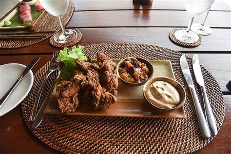

A Culinary Journey at Amanpulo
Experience the rich flavors of the Philippines, exclusively at Amanpulo.
Grilled Seafood Feast
Our Grilled Seafood Feast is a perfect combination of freshly caught seafood grilled to perfection. Indulge in a variety of delicacies, from succulent prawns to tender fish, all served with a side of Amanpulo's signature dipping sauces. The experience is complete with a view of the pristine beach, making every bite a moment to remember.
This meal is ideal for those who enjoy the freshest flavors of the sea in an intimate and luxurious setting.
Amanpulo Signature Prawn Curry
 Our signature prawn curry is a unique blend of traditional Filipino and Southeast Asian flavors. The rich and creamy sauce complements the tender prawns perfectly, offering a deliciously indulgent dish that is a must-try for food lovers. Served with aromatic jasmine rice, it is the perfect meal to enjoy under the tropical sky.
Our signature prawn curry is a unique blend of traditional Filipino and Southeast Asian flavors. The rich and creamy sauce complements the tender prawns perfectly, offering a deliciously indulgent dish that is a must-try for food lovers. Served with aromatic jasmine rice, it is the perfect meal to enjoy under the tropical sky.
Experience the warmth and spice of the Philippines with every spoonful of this culinary masterpiece.
Fresh Island Fruit Platter
 Our Fresh Island Fruit Platter is a colorful and refreshing assortment of tropical fruits sourced directly from the island. Featuring everything from sweet mangoes to tangy pineapples and creamy coconuts, this platter is a healthy and delicious treat to start your day.
Our Fresh Island Fruit Platter is a colorful and refreshing assortment of tropical fruits sourced directly from the island. Featuring everything from sweet mangoes to tangy pineapples and creamy coconuts, this platter is a healthy and delicious treat to start your day.
Perfect for breakfast or as a light snack, the vibrant flavors will transport you to the heart of the Philippines' tropical paradise.
Pina Colada Sorbet
Cool off with our Pina Colada Sorbet, a tropical twist on the classic cocktail. Made with fresh pineapple, coconut, and a hint of rum, this refreshing dessert is the perfect way to end a delicious meal.
It's a light, tangy treat that embodies the island's laid-back vibe while offering a burst of tropical flavors.
More Culinary Delights
At Amanpulo, our culinary offerings are inspired by the natural bounty of the island. From traditional Filipino dishes to innovative fusion creations, each meal promises to be an unforgettable part of your experience. Whether you're dining at our beachfront restaurant or enjoying a private meal in your villa, our chefs will delight you with fresh, locally-sourced ingredients and expertly prepared dishes.